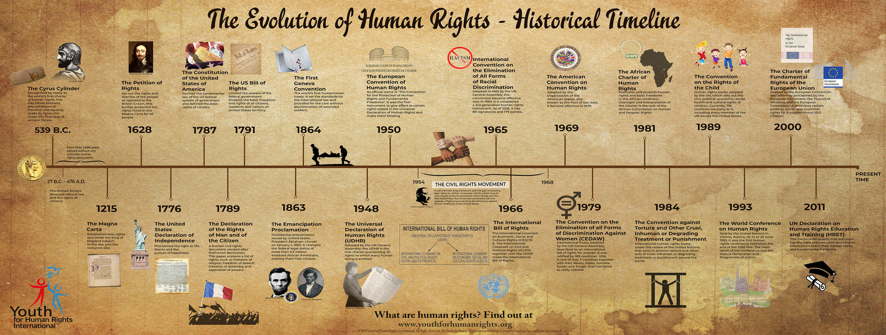
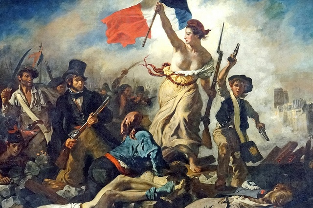

TIMELINE OF HUMAN ANCESTRY EVOLUTION AND CULTURAL DEVELOPMENT
FIRE
Gave us power
FARMING
Made us hungrier
MONEY
Gave us purpose
SCIENCE
Made us deadly
"A Brief Timeline from Cosmo Begins to the year of 2020 COVID-19"

Why the timeline from Cosmo begins has something to do with covid-19 or us?
Earth is 4.5 billion years old. In just a fraction of that time,
one species among countless others has conquered it: which is us.
Basically this page opens up with the origin of organisms from simple phenomena like energy, matter,
atoms and molecules. The chronological explanation given in this chapter regarding the coming of organisms into existence,
confirm that organisms including Homo sapiens evolved from simple organisms into complex organisms.
Ostensibly, the sapiens appeared the most intelligent organisms, and that explains why they formed their own cultures and later became
in charge of other organisms.
Besides, the presentation of systematic developments or revolution of human cultures and
societies presents evolution as an ongoing process. As a result, this convinces that organisms originated from simple organisms to become complex
organisms. This pictures humankind evolution as a process that is gradual, but makes tremendous transformations to human life.
Few things you need to know before reading below. Look at your left side üëà or top ‚òùÔ∏è (Phone) that's the
sidebar you can scroll to a different timeline from Cosmological
beginnings until to the year 2020 Covid 19 which is the Planetary Management era"
Hence, below every image and table are
able to scroll for more pictures and specific years of events happening on every events.
If you would like to come back on top of the page just tab and click üëà or top ‚òùÔ∏è (Phone) on the left top "TIMELINE"
I Hope you enjoy my page and get most of the knowledge from that i have gathered, cheers!
Years ago
Historical event
7,000
world population of humans passes 5 million
360
world population of humans passes 500 million
34
world population of humans passes 5 billion
Today
world population of humans passes 7.7 Billion
COSMOLOGICAL BEGINNINGS
ABOUT 13.5 BILLION YEARS AGO, MATTER, energy, time and space came into being in what is known as the Big Bang. The story of these fundamental features of our universe is called "Physics".
About 300,000 years after their appearance, matter and energy started to coalesce into complex structures, called atoms, which then combined into molecules.
The story of atoms, molecules and their interactions is called Chemistry."
About 3.8 billion years ago, on a planet called Earth, certain molecules combined to form particularly large and intricate structures called organisms.
The story of organisms is called "Biology".
About 70,000 years ago, organisms belonging to the species Homo sapiensstarted to form even more elaborate structures called cultures.
The subsequent development of these human cultures is called "History".
Three important revolutions shaped the course of history:
The Cognitive Revolution kick-started history about 70,000 years ago.
The Agricultural Revolution sped it up about 12,000 years ago.
The Scientific Revolution, which got under way only 500 years ago, may well end history and start something completely different.
Below will cover the list of three revolutions in specific what had happen in between those era. Why "We" have been behaving like this.
Years ago
Historical event
13,800,000,000
Big Bang singularity, expansion of space, formation of the observable universe, galaxies, solar systems, stars, planets, moons, asteroids, and the laws of physics
12,600,000,000
formation of the Milky Way galaxy
4,600,000,000
formation of the Sun and its Solar System within the Milky Way
4,400,000,000
formation of Earth's water and atmosphere
CULTURAL DEVELOPMENT HUMAN ANCESTRY AND EVOLUTION
Physics
The story of fundamental our universe
Chemistry
The story of atoms, molecules
Biology
The story of organisms
History
The subsequent development of cultures
Myth
Our chimpanzee cousins usually live in small troops of several dozen individuals.
They form close friendships, hunt together and fight shoulder to shoulder against baboons,
cheetahs and enemy chimpanzees. Their social structure tends to be hierarchical. The dominant member,
who is almost always a male, is termed the ‘alpha male’. Other males and females exhibit their submission to
the alpha male by bowing before him while making grunting sounds, not unlike human subjects kowtowing before a king.
The alpha male strives to maintain social harmony within his troop. When two individuals fight, he will intervene and
stop the violence. Less benevolently, he might monopolise particularly coveted foods and prevent lower-ranking males from
mating with the females.
When two males are contesting the alpha position, they usually do so by forming extensive coalitions of supporters,
both male and female, from within the group. Ties between coalition members are based on intimate daily contact – hugging,
touching, kissing, grooming and mutual favours. Just as human politicians on election campaigns go around shaking hands and
kissing babies, so aspirants to the top position in a chimpanzee group spend much time hugging, back-slapping and kissing baby
chimps. The alpha male usually wins his position not because he is physically stronger, but because he leads a large and stable
coalition. These coalitions play a central part not only during overt struggles for the alpha position, but in almost all
day-to-day activities. Members of a coalition spend more time together, share food, and help one another in times of trouble.
There are clear limits to the size of groups that can be formed and maintained in such a way. In order to function,
all members of a group must know each other intimately. Two chimpanzees who have never met, never fought, and never engaged
in mutual grooming will not know whether they can trust one another, whether it would be worthwhile to help one another, and
which of them ranks higher. Under natural conditions, a typical chimpanzee troop consists of about twenty to fifty individuals.
As the number of chimpanzees in a troop increases, the social order destabilises, eventually leading to a rupture and the formation
of a new troop by some of the animals. Only in a handful of cases have zoologists observed groups larger than a hundred. Separate
groups seldom cooperate, and tend to compete for territory and food. Researchers have documented prolonged warfare between groups,
and even one case of ‘genocidal’ activity in which one troop systematically slaughtered most members of a neighbouring band.
Similar patterns probably dominated the social lives of early humans, including archaic Homo sapiens. Humans,
like chimps, have social instincts that enabled our ancestors to form friendships and hierarchies, and to hunt or fight
together. However, like the social instincts of chimps, those of humans were adapted only for small intimate groups. When
the group grew too large, its social order destabilised and the band split. Even if a particularly fertile valley could feed
500 archaic Sapiens, there was no way that so many strangers could live together. How could they agree who should be leader, who
should hunt where, or who should mate with whom?
In the wake of the Cognitive Revolution, gossip helped Homo sapiens to form larger and
more stable bands. But even gossip has its limits. Sociological research has shown that the maximum
‘natural’ size of a group bonded by gossip is about 150 individuals. Most people can neither intimately know
, nor gossip effectively about, more than 150 human beings.
Even today, a critical threshold in human organisations falls somewhere around this magic number. Below this threshold,
communities, businesses, social networks and military units can maintain themselves based mainly on intimate acquaintance and
rumour-mongering. There is no need for formal ranks, titles and law books to keep order.3 A platoon of thirty soldiers or even a
company of a hundred soldiers can function well on the basis of intimate relations, with a minimum of formal discipline.
A well-respected sergeant can become ‘king of the company and exercise authority even over commissioned officers. A small
family business can survive and flourish without a board of directors, a CEO or an accounting department.
But once the threshold of 150 individuals is crossed, things can no longer work that way. You cannot run a division
with thousands of soldiers the same way you run a platoon. Successful family businesses usually face a crisis when
they grow larger and hire more personnel. If they cannot reinvent themselves, they go bust.
How did Homo sapiens manage to cross this critical threshold, eventually founding cities comprising tens of thousands
of inhabitants and empires ruling hundreds of millions? The secret was probably the appearance of fiction. Large numbers
of strangers can cooperate successfully by believing in common myths.
Any large-scale human cooperation – whether a modern state, a medieval church, an ancient city or an archaic tribe
– is rooted in common myths that exist only in peoples collective imagination. Churches are rooted in common religious
myths. Two Catholics who have never met can nevertheless go together on crusade or pool funds to build a hospital because
they both believe that God was incarnated in human flesh and allowed Himself to be crucified to redeem our sins. States
are rooted in common national myths. Two Serbs who have never met might risk their lives to save one another because both
believe in the existence of the Serbian nation, the Serbian homeland and the Serbian flag. Judicial systems are rooted in
common legal myths. Two lawyers who have never met can nevertheless combine efforts to defend a complete stranger because
they both believe in the existence of laws, justice, human rights – and the money paid out in fees.
Years ago
Historical event
3,800,000,000
earliest recorded life on Earth, single-celled Prokaryotes
3,500,000,000
earliest atmospheric oxygen
1,500,000,000
earliest Eukaryotes, sexual reproduction with meiosis and recombination
670,000,000
earliest Metazoa amongst the Eukaryotes: worms and jellyfish
550,000,000
earliest chordates amongst the metazoans (late Cambrian period), filter-feeding proto-vertebrates
500,000,000
earliest vertebrates amongst the chordates (Ordovician period), jawless predatory Conodonts
earliest mammals amongst the terrestrial vertebrates (late Triassic period), fur and endothermy
65,000,000
dinosaur extinctions, Tertiary radiation of mammals (late Cretaceous period)
55,000,000
earliest prosimian primates amongst the mammals (Eocene period), brachiation
36,000,000
earliest monkeys amongst the primates (early Oligocene period), colour vision, opposable thumb, social
25,000,000
earliest apes amongst the primates (early Miocene period), enlarged brain
15,000,000
earliest hominids (great apes) amongst the apes
4,200,000
earliest hominins (Australopithecus spp) amongst the hominids in Africa, bipedal, larger brain
2,600,000
earliest co-existing hominin genus (Paranthropus)
2,600,000
start of Quaternary ice-age, earliest stone tools (Ethiopia): Oldowan tools, suitable for chopping through flesh, bone, bark
2,100,000
earliest human (Homo habilis) amongst the hominins in Africa, stone tools suitable for cleaving meat from bone
2,000,000
earliest direct ancestor of modern humans, Homo erectus (South Africa), co-habiting with Australopithecus and Paranthropus
1,600,000
earliest stone hand axes (Tanzania), suitable for butchering, skinning, cutting, stripping, hammering, drilling → population mobility
1,500,000
replacement of Homo habilis by Homo erectus, probable use of speech
1,200,000
extinction of Australopithecus
1,000,000
migrations of Homo erectus to Europe and Asia from Africa, even 1.8 million years ago?
600,000
extinction of Paranthropus
400,000
archaic Homo sapiens in Africa, use of fire, huts
130,000
Neanderthals (Homo sapiens neanderthalis) in Europe and Asia. Out of Africa?
90,000
Cro-magnons (Homo sapiens sapiens), first modern human in Europe. Out of Africa? Interbreeding with H. sapiens neanderthalis
CULTURAL DEVELOPMENT Hunter-gatherer nomads
Small Village of Hunter-GathererHunter-Gatherers HuntingHunter-Gatherers HuntingThe Nature of WolvesSmall Village of Hunter-Gatherer
The Domestication of Fire
A significant step on the way to the top was the domestication of fire. Some human species may have made occasional use of fire as early as 800,000 years ago. Humans now had a dependable source of light and warmth, and a deadly weapon against prowling lions. Not long afterwards, humans may even have started deliberately to torch their neighbourhoods. A carefully managed fire could turn impassable barren thickets into prime grasslands teeming with game. In addition, once the fire died down, Stone Age entrepreneurs could walk through the smoking remains and harvest charcoaled animals, nuts and tubers.
.”
Humans now had a dependable source of light and warmth, and a deadly weapon against prowling lions. Not long afterwards, humans may even have started deliberately to torch their neighbourhoods. A carefully managed fire could turn impassable barren thickets into prime grasslands teeming with game. In addition, once the fire died down, Stone Age entrepreneurs could walk through the smoking remains and harvest charcoaled animals, nuts and tubers.
But the best thing fire did was cook. Foods that humans cannot digest in their natural forms – such as wheat, rice and potatoes – became staples of our diet thanks to cooking. Fire not only changed food’s chemistry, it changed its biology as well. Cooking killed germs and parasites that infested food. Humans also had a far easier time chewing and digesting old favourites such as fruits, nuts, insects and carrion if they were cooked. Whereas chimpanzees spend five hours a day chewing raw food, a single hour suffices for people eating cooked food.
The advent of cooking enabled humans to eat more kinds of food, to devote less time to eating, and to make do with smaller teeth and shorter intestines. Some scholars believe there is a direct link between the advent of cooking, the shortening of the human intestinal track, and the growth of the human brain. Since long intestines and large brains are both massive energy consumers, it’s hard to have both. By shortening the intestines and decreasing their energy consumption, cooking inadvertently opened the way to the jumbo brains of Neanderthals and Sapiens.
Fire also opened the first significant gulf between man and the other animals. The power of almost all animals depends on their bodies: the strength of their muscles, the size of their teeth, the breadth of their wings. Though they may harness winds and currents, they are unable to control these natural forces, and are always constrained by their physical design. Eagles, for example, identify thermal columns rising from the ground, spread their giant wings and allow the hot air to lift them upwards. Yet eagles cannot control the location of the columns, and their maximum carrying capacity is strictly proportional to their wingspan.
When humans domesticated fire, they gained control of an obedient and potentially limitless force. Unlike eagles, humans could choose when and where to ignite a flame, and they were able to exploit fire for any number of tasks. Most importantly, the power of fire was not limited by the form, structure or strength of the human body. A single woman with a flint or fire stick could burn down an entire forest in a matter of hours. The domestication of fire was a sign of things to come.
Years ago
Historical event
60,000
colonisation of Australia by Homo sapiens
60,000
burial of dead by Neanderthals (La Chapelle-aux-Saints, France)
50,000
earliest use of string: three-ply cord of bark fibres (Abri du Maras, France)
40,000
fipple flutes made from bone by Neanderthals
34,000
Cro-magnons replace Neanderthals in Europe. Bone tools, full language
32,400
earliest cave paintings, figurative art by Cro-magnons (Chauvet caves at Vallon-Pont-d'Arc, France)
30,000
latest record of Homo erectus (Asia)
28,000
earliest representational art: sculptured 'Venus of Willendorf' (Austria)
15,000
Mongoloids colonise North America from Asia over Bering land bridge, or from Europe by boat 17,000 years ago?
14,000
domestication of dogs (China)
12,000
colonisation of South America from Mexico
12,000
extinction of woolly mammoths (America and Europe), caused by climate change and hunting
Agricultural farming and settlements
Cultivation of millet and rice (China)Old Kingdom Egypt Stock PhotosNoah's Ark
History's biggest fraud.
FOR 2.5 MILLION YEARS HUMANS FED themselves by gathering plants and hunting animals that lived and bred without
their intervention. Homo erectus, Homo ergaster and the Neanderthals plucked wild figs and hunted wild sheep without
deciding where fig trees would take root, in which meadow a herd of sheep should graze, or which billy goat would
inseminate which nanny goat. Homo sapiens spread from East Africa to the Middle East, to Europe and Asia, and
finally to Australia and America – but everywhere they went, Sapiens too continued to live by gathering wild
plants and hunting wild animals. Why do anything else when your lifestyle feeds you amply and supports a rich
world of social structures, religious beliefs and political dynamics?
All this changed about 10,000 years ago, when Sapiens began to devote almost all their time and effort to
manipulating the lives of a few animal and plant species. From sunrise to sunset humans sowed seeds, watered
plants, plucked weeds from the ground and led sheep to prime pastures. This work, they thought, would provide
them with more fruit, grain and meat. It was a revolution in the way humans lived – the Agricultural Revolution.
The transition to agriculture began around 9500–8500 BC in the hill country of south-eastern Turkey, western Iran,
and the Levant. It began slowly and in a restricted geographical area. Wheat and goats were domesticated by approximately
9000 BC; peas and lentils around 8000 BC; olive trees by 5000 BC; horses by 4000 BC; and grapevines in 3500 BC. Some animals
and plants, such as camels and cashew nuts, were domesticated even later, but by 3500 BC the main wave of domestication
was over. Even today, with all our advanced technologies, more than 90 per cent of the calories that feed humanity come
from the handful of plants that our ancestors domesticated between 9500 and 3500 BC – wheat, rice, maize (called ‘corn’
in the US), potatoes, millet and barley. No noteworthy plant or animal has been domesticated in the last 2,000 years.
If our minds are those of hunter-gatherers, our cuisine is that of ancient farmers.
Scholars once believed that agriculture spread from a single Middle Eastern point of origin to the four corners of the world.
Today, scholars agree that agriculture sprang up in other parts of the world not by the action of Middle Eastern farmers exporting
their revolution but entirely independently. People in Central America domesticated maize and beans without knowing anything
about wheat and pea cultivation in the Middle East. South Americans learned how to raise potatoes and llamas, unaware of what
was going on in either Mexico or the Levant. Chinas first revolutionaries domesticated rice, millet and pigs. North America’s
first gardeners were those who got tired of combing the undergrowth for edible gourds and decided to cultivate pumpkins.
New Guineans tamed sugar cane and bananas, while the first West African farmers made African millet, African rice, sorghum
and wheat conform to their needs. From these initial focal points, agriculture spread far and wide. By the first century
AD the vast majority of people throughout most of the world were agriculturists.
Why did agricultural revolutions erupt in the Middle East, China and Central America but not in Australia, Alaska or South
Africa? The reason is simple: most species of plants and animals can’t be domesticated. Sapiens could dig up delicious truffles
and hunt down woolly mammoths, but domesticating either species was out of the question. The fungi were far too elusive,
the giant beasts too ferocious. Of the thousands of species that our ancestors hunted and gathered, only a few were suitable
candidates for farming and herding. Those few species lived in particular places, and those are the places where agricultural
revolutions occurred.
Scholars once proclaimed that the agricultural revolution was a great leap forward for humanity. They told a tale of progress
fuelled by human brain power. Evolution gradually produced ever more intelligent people. Eventually, people were so smart that
they were able to decipher nature’s secrets, enabling them to tame sheep and cultivate wheat. As soon as this happened,
they cheerfully abandoned the gruelling, dangerous, and often spartan life of hunter-gatherers, settling down to enjoy
the pleasant, satiated life of farmers.
That tale is a fantasy. There is no evidence that people became more intelligent with time. Foragers knew the secrets of
nature long before the Agricultural Revolution, since their survival depended on an intimate knowledge of the animals they
hunted and the plants they gathered. Rather than heralding a new era of easy living, the Agricultural Revolution left farmers
with lives generally more difficult and less satisfying than those of foragers. Hunter-gatherers spent their time in more
stimulating and varied ways, and were less in danger of starvation and disease. The Agricultural Revolution certainly
enlarged the sum total of food at the disposal of humankind, but the extra food did not translate into a better diet
or more leisure. Rather, it translated into population explosions and pampered elites. The average farmer worked harder
than the average forager, and got a worse diet in return. The Agricultural Revolution was history’s biggest fraud.
Who was responsible? Neither kings, nor priests, nor merchants. The culprits were a handful of plant species, including wheat,
rice and potatoes. These plants domesticated Homo sapiens, rather than vice versa.
Think for a moment about the Agricultural Revolution from the viewpoint of wheat. Ten thousand years ago wheat was just a wild grass,
one of many, confined to a small range in the Middle East. Suddenly, within just a few short millennia, it was growing all over the
world. According to the basic evolutionary criteria of survival and reproduction, wheat has become one of the most successful
plants in the history of the earth. In areas such as the Great Plains of North America, where not a single wheat stalk grew
10,000 years ago, you can today walk for hundreds upon hundreds of kilometres without encountering any other plant.
Worldwide, wheat covers about 2.25 million square kilometres of the globes surface, almost ten times the size of Britain.
How did this grass turn from insignificant to ubiquitous?
Wheat did it by manipulating Homo sapiens to its advantage. This ape had been living a fairly comfortable life hunting and
gathering until about 10,000 years ago, but then began to invest more and more effort in cultivating wheat. Within a couple
of millennia, humans in many parts of the world were doing little from dawn to dusk other than taking care of wheat plants.
It wasn’t easy. Wheat demanded a lot of them. Wheat didn’t like rocks and pebbles, so Sapiens broke their backs clearing
fields. Wheat didn’t like sharing its space, water and nutrients with other plants, so men and women laboured long days
weeding under the scorching sun. Wheat got sick, so Sapiens had to keep a watch out for worms and blight. Wheat was
defenceless against other organisms that liked to eat it, from rabbits to locust swarms, so the farmers had to
guard and protect it. Wheat was thirsty, so humans lugged water from springs and streams to water it. Its
hunger even impelled Sapiens to collect animal faeces to nourish the ground in which wheat grew.
The body of Homo sapiens had not evolved for such tasks. It was adapted to climbing apple trees and running after gazelles,
not to clearing rocks and carrying water buckets. Human spines, knees, necks and arches paid the price. Studies of
ancient skeletons indicate that the transition to agriculture brought about a plethora of ailments, such
as slipped discs, arthritis and hernias. Moreover, the new agricultural tasks demanded so much time
that people were forced to settle permanently next to their wheat fields. This completely changed
their way of life. We did not domesticate wheat. It domesticated us. The word ‘domesticate’
comes from the Latin domus, which means ‘house’. Who’s the one living in a house? Not
the wheat. It’s the Sapiens.
How did wheat convince Homo sapiens to exchange a rather good life for a more miserable existence? What did it offer in return?
It did not offer a better diet. Remember, humans are omnivorous apes who thrive on a wide variety of foods. Grains made up
only a small fraction of the human diet before the Agricultural Revolution. A diet based on cereals is poor in minerals
and vitamins, hard to digest, and really bad for your teeth and gums.
Wheat did not give people economic security. The life of a peasant is less secure than that of a hunter-gatherer.
Foragers relied on dozens of species to survive, and could therefore weather difficult years even without stocks
of preserved food. If the availability of one species was reduced, they could gather and hunt more of other
species. Farming societies have, until very recently, relied for the great bulk of their calorie intake on
a small variety of domesticated plants. In many areas, they relied on just a single staple, such as wheat,
potatoes or rice. If the rains failed or clouds of locusts arrived or if a fungus learned how to infect
that staple species, peasants died by the thousands and millions.
Nor could wheat offer security against human violence. The early farmers were at least as violent as their forager
ancestors, if not more so. Farmers had more possessions and needed land for planting. The loss of pasture land to
raiding neighbours could mean the difference between subsistence and starvation, so there was much less room for
compromise. When a foraging band was hard-pressed by a stronger rival, it could usually move on. It was difficult
and dangerous, but it was feasible. When a strong enemy threatened an agricultural village, retreat meant giving
up fields, houses and granaries. In many cases, this doomed the refugees to starvation. Farmers, therefore,
tended to stay put and fight to the bitter end.
Tribal warfare in New Guinea between two farming communities (1960). Such scenes were probably widespread in
the thousands of years following the Agricultural Revolution.
Many anthropological and archaeological studies indicate that in simple agricultural societies with no political frameworks beyond village and tribe,
human violence was responsible for about 15 per cent of deaths, including 25 per cent of male deaths. In contemporary New Guinea, violence accounts
for 30 per cent of male deaths in one agricultural tribal society, the Dani, and 35 per cent in another, the Enga. In Ecuador, perhaps 50 per cent
of adult Waoranis meet a violent death at the hands of another human!3 In time, human violence was brought under control through the development
of larger social frameworks – cities, kingdoms and states. But it took thousands of years to build such huge and effective political structures.
Village life certainly brought the first farmers some immediate benefits, such as better protection against wild animals, rain and cold. Yet for
the average person, the disadvantages probably outweighed the advantages. This is hard for people in today’s prosperous societies to appreciate.
Since we enjoy affluence and security, and since our affluence and security are built on foundations laid by the Agricultural Revolution, we
assume that the Agricultural Revolution was a wonderful improvement. Yet it is wrong to judge thousands of years of history from the perspective
of today. A much more representative viewpoint is that of a three-year-old girl dying from malnutrition in first-century China because her
father’s crops have failed. Would she say ‘I am dying from malnutrition, but in 2,000 years, people will have plenty to eat and live in big
air-conditioned houses, so my suffering is a worthwhile sacrifice’?
What then did wheat offer agriculturists, including that malnourished Chinese girl? It offered nothing for people as individuals. Yet it did
bestow something on Homo sapiens as a species. Cultivating wheat provided much more food per unit of territory, and thereby enabled Homo
sapiensto multiply exponentially. Around 13,000 BC, when people fed themselves by gathering wild plants and hunting wild animals, the
area around the oasis of Jericho, in Palestine, could support at most one roaming band of about a hundred relatively healthy and
well-nourished people. Around 8500 BC, when wild plants gave way to wheat fields, the oasis supported a large but cramped
village of 1,000 people, who suffered far more from disease and malnourishment.
The currency of evolution is neither hunger nor pain, but rather copies of DNA helixes. Just as the economic success of a company
is measured only by the number of dollars in its bank account, not by the happiness of its employees, so the evolutionary success
of a species is measured by the number of copies of its DNA. If no more DNA copies remain, the species is extinct, just as a
company without money is bankrupt. If a species boasts many DNA copies, it is a success, and the species flourishes.
From such a perspective, 1,000 copies are always better than a hundred copies. This is the essence of the
Agricultural Revolution: the ability to keep more people alive under worse conditions.
Yet why should individuals care about this evolutionary calculus? Why would any sane person lower his or her standard of living just to
multiply the number of copies of the Homo sapiens genome? Nobody agreed to this deal: the Agricultural Revolution was a trap.
Years ago
Historical event
11,000
domestication of sheep (Iraq)
11,000
earliest continuous settlement: Jericho, Palestine, walled city of two to three thousand people
10,000
domestication of goats (Iran), and pigs (Thailand)
10,000
continental ice-sheets withdraw from Europe and North America
9,500
earliest use of bricks: adobe earth and reeds (Tell Aswad, Tigris) fired bricks (China, 6,400 years ago)
9,500
cultivation of wheat and barley (Mesopotamia [now Iraq])
8,000
earliest hand pottery, and spinning and weaving (Mesopotamia)
7,550
flooding of Black Sea from Mediterranean: the biblical flood of Noah's Ark
7,500
cultivation of millet and rice (China)
7,000
world
population of humans passes 5 million
7,000
domestication of cattle (Iran)
6,350
domestication of horses (Ukraine)
5,500
earliest use of the wheel (Mesopotamia),transport and pottery
5,500
earliest writing on papyrus (Egypt) paper
5,400
earliest use of a number system: decimals (Egypt)
5,100
beginning of Old Kingdom (Egypt), urban Sumer civilisation (Mesopotamia)
5,000
earliest written words: hieroglyphics (Egypt), cuneiform (Mesopotamia)
4,700
earliest monuments: pyramids (Egypt)
4,600
earliest bookkeeping of financial transactions (Babylonia)
4,400
earliest use of the abacus (Mesopotamia)
4,100
earliest fictional story: Epic of Gilgamesh (in cuneiform, from Ur, Mesopotamia)
4,000
invention of ice-cream (China)
4,000
start of the bronze age (Europe), earliest metallic money
Empires and conquests
King of Kish
He had conquered the entire world
Emperor Qín Shǐ
Everything belongs to the emperor
Kings of Assyria
They had conquered the entire world
Alexander the Great
They claimed to rule the entire world
The Kingdom of BabylonianThe War of BabylonianThe City of BabylonianThe Palace of Qing DynastyThe under constuction of the Great Wall of China ( 400,000 people died during the wall's construction )Painting of the 1758 Battle of Oroi-Jalatu, in which the Qing defeated the DzungarThe Solomon TempleThe City of Roman EmpireThe Palace of Roman EmpireThe Battles of the Roman-Persian Wars
It’s for Your Own Good
The first empire about which we have definitive information was the Akkadian Empire of Sargon the Great (c.2250 BC).
Sargon began his career as the king of Kish, a small city state in Mesopotamia. Within a few decades he managed to conquer
not only all other Mesopotamian city states, but also large territories outside the Mesopotamian heartland. Sargon
boasted
that he had conquered the
entire world.
In reality, his dominion stretched from the Persian Gulf to the Mediterranean, and
included most of today’s Iraq and Syria, along with a few slices of modern Iran and Turkey.
The Akkadian Empire did not last long after its founder’s death, but Sargon left behind an imperial mantle that seldom
remained unclaimed. For the next 1,700 years, Assyrian, Babylonian and Hittite kings adopted Sargon as a role model,
boasting that they, too, had conquered the entire world. Then, around 550 BC, Cyrus the Great of Persia came along with
an even more impressive boast.
The kings of Assyria always remained the kings of Assyria. Even when they claimed to rule the entire world, it was
obvious that they were doing it for the greater glory of Assyria, and they were not apologetic about it. Cyrus, on the
other hand, claimed not merely to rule the whole world, but to do so for the sake of all people. ‘We are conquering you
for your own benefit,’ said the Persians. Cyrus wanted the peoples he subjected to love him and to count themselves lucky
to be Persian vassals. The most famous example of Cyrus’ innovative efforts to gain the approbation of a nation living under
the thumb of his empire was his command that the Jewish exiles in Babylonia be allowed to return to their Judaean homeland
and rebuild their temple. He even offered them financial assistance. Cyrus did not see himself as a Persian king ruling over
Jews – he was also the king of the Jews, and thus responsible for their welfare.
The presumption to rule the entire world for the benefit of all its inhabitants was startling. Evolution has made Homo
sapiens, like other social mammals, a xenophobic creature. Sapiens instinctively divide humanity into two parts, ‘we’ and
‘they’. We are people like you and me, who share our language, religion and customs. We are all responsible for each other,
but not responsible for them. We were always distinct from them, and owe them nothing. We don’t want to see any of them in
our territory, and we don’t care an iota what happens in their territory. They are barely even human. In the language of the
Dinka people of the Sudan, ‘Dinka’ simply means ‘people’. People who are not Dinka are not people. The Dinka’s bitter enemies
are the Nuer. What does the word Nuer mean in Nuer language? It means ‘original people’. Thousands of kilometres from the
Sudan deserts, in the frozen ice-lands of Alaska and north-eastern Siberia, live the Yupiks. What does Yupik mean in Yupik
language? It means ‘real people’.
In contrast with this ethnic exclusiveness, imperial ideology from Cyrus onward has tended to be inclusive and all-encompassing.
Even though it has often emphasised racial and cultural differences between rulers and ruled, it has still recognised the basic
unity of the entire world, the existence of a single set of principles governing all places and times, and the mutual
responsibilities of all human beings. Humankind is seen as a large family: the privileges of the parents go hand in hand with
responsibility for the welfare of the children.
This new imperial vision passed from Cyrus and the Persians to Alexander the Great, and from him to Hellenistic kings,
Roman emperors, Muslim caliphs, Indian dynasts, and eventually even to Soviet premiers and American presidents. This benevolent
imperial vision has justified the existence of empires, and negated not only attempts by subject peoples to rebel, but also
attempts by independent peoples to resist imperial expansion.
The first emperor of the united Chinese empire, Qín Shǐ Huángdì, boasted that ‘throughout the six directions [of the universe]
everything belongs to the emperor … wherever there is a human footprint, there is not one who did not become a
subject [of the emperor] … his kindness reaches even oxen and horses. There is not one who did not benefit. Every man
is safe under his own roof.’4 In Chinese political thinking as well as Chinese historical memory, imperial periods were
henceforth seen as golden ages of order and justice. In contradiction to the modern Western view that a just world
is composed of separate nation states, in China periods of political fragmentation were seen as dark ages of chaos
and injustice. This perception has had far-reaching implications for Chinese history. Every time an empire collapsed,
the dominant political theory goaded the powers that be not to settle for paltry independent principalities, but to
attempt reunification. Sooner or later these attempts always succeeded.
Years ago
Historical event
3,800
beginning of Shang dynasty (China), Babylonian civilisation (Mesopotamia)
3,800
earliest records of contraception
3,500
earliest alphabet (North Semitic, Palestine and Syria)
3,400
earliest notated music: Hurrian Hymn to Nikkal (in cuneiform, from Ugarit, Syria)
3,400
earliest concrete (Mycenaeans), bonding rock aggregates with lime mortar dominant building material of modern times
3,200
sea-going trade: in dyes (Phoenicians, Mediterranean)
3,000
world
population of humans passes 50 million
3,000
cultivation of maize (Mexico) maize, wheat, rice sustain half the modern world's food needs
2,950
first Jewish temple (Jerusalem), King Solomon and rise of Judaism
Euclidean geometry postulated (Euclid of Alexandria, Greece)
2,250
first estimation of within known limits (Archimedes, Greece) method of calculus
2.250
invention of Archimedes' Screw for pumping water uphill
2,200
Great Wall of China (Emperor Qin Shi Huang) 1,900 km 21,196 km by Ming Dynasty to 1644
2,200
invention of the architectural arch, invention of the first accurate calendars (Egypt)
2,100
earliest promisory notes (on leather, Han Dynasty, China) banknotes
2,100
Silk Road overland trade routes established between East Asia and Southern Europe
2,000
rise of the Roman Empire (Europe), beginnings of Christianity
1,900
use of porcelain (China)
1,700
use of magnetic compass (China)
1,400
rise of Islam (Arabia)
1,200
earliest block printing on paper (China)
1,120
earliest use of statistical inference (al-Kindi, Iraq, 841)
1,120
first use of explosives in warfare: gunpowder (China, 904)
930
invention of the astronomical clock (China, 1092)
730
first mechanical clocks, using an escapement mechanism
680
accretion of personal wealth from gold: Mansa Musa I (c. 1280 - 1337), Emperor of Mali and richest person in history
670
Black Death bacillus Yersinia pestis carried by rats kills half of the human population across much of
Europe, 1347-51
620
birth of the Renaissance (Italy), rise of individuality, imagination,
innovation, capitalism
550
first moveable-type printing (Europe)
520
European mariners reach the Americas (Christopher Columbus from Spain, 1492) and India (Vasco da Gama from Portugal, 1498) global sea trade
500
Reformation, splitting the universal Christian world into sects (Martin Luther, Germany, 1517)
500
first circumnavigation of the globe (Ferdinand Magellan from Spain to Philippines, Juan Sebastián Elcano return to Spain, 1519-22)
Scientific Revolution
The Polish astronomer, Nicolaus Copernicus (1473 -1543) made crucial observations in Rome in 1500Visionary minds such as Isaac Newton prompted humanity to look at the natural world like never beforePolish astronomer Johannes Hevelius (1611-1687) using a telescope fitted with a quadrant. Hevelius was one of several European astronomers who drew heavily on work of Persian and Arabic astronomers.A piece of binary code paper written by Gottfried Wilhelm Leibniz The Gregorian calendar (Western calendar, Christian calendar) is the solar calendar in use throughout most of the world
About 70,000 years ago, organisms belonging to the species Homo sapiensstarted to form even more elaborate structures called cultures.
The subsequent development of these human cultures is called "History".
Years ago
Historical event
480
theory of Earth revolving around the Sun (Nicolaus Copernicus, Poland, 1543)
440
introduction of Gregorian calendar (Pope Gregory XIII, 1582) → de facto international standard for civil calendars
410
first universal clock, calibrated on orbital periods of Jupiter's moons (Galileo Galilei, Italy, 1612) → determination of longitude, birth of modern science
400
distances of planets from the Sun measured relative to Earth's distance of 1 astronomical unit (Johannes Kepler, Germany, 1619)
360
world population of humans passes 500 million
340
first determination of the speed of light (Ole Rømer, Denmark, 1676) → 299,792 km/s, light-year astronomical distance
330
formulation of laws of motion and gravitation (Isaac Newton, UK, Principia 1687) → foundation of classical mechanics, European Age of Enlightenment
328
binary code ( how your computer run ) was invented by Gottfried Wilhelm Leibniz a german mathematicians in (1689)
320
rapid colonisation of Americas and India by Europeans
307
freemasonry began in 1717 with the founding of the Grand Lodge—an association of Masonic lodges—in England
290
cataloguing of organisms by genera and species (Carl Linnaeus, Sweden, Systema
Naturae 1735)
260
first observed transit of Venus across the Sun (1761) → 1 astronomical unit equal to 149,597,870.691 km
250
invention of the steam engine (James Watt, UK, 1769), → powered
machinery, steamships
250
discovery of law of conservation of mass (Antoine Lavoisier, France, 1773)
240
illuminati Founded 1 May 1776, Ingolstadt, Germany an Enlightenment-era secret society ( The all seeing eye)
240
independence of North American colonies (1776) → economic super state of
USA
240
first national nature reserve (Bogd Khan Uul, Mongolia, 1778)
Industrial Revolution
Inventor Karl Benz seated on the 1885 Benz Motorwagen. Bettmann Archive

Liberty Leading the People. Eugène Delacroix. 1830 French RevolutionAlessandro Volta demonstrating his battery's generation of electric current before Napoleon (seated) in Paris in 1801. (fundamental of mobile storage)Early Stephenson locomotive illustrated in Samuel Smiles' Lives of the Engineers (1862).1903 North Carolina, First airplane flies (stayed aloft for 12 seconds and covered 120 feet on its inaugural flight)03/07/1876 - Alexander Graham Bell Patents the TelephoneThomas Alva Edison Holding a LightbulbNikola Tesla in his laboratory in 1899. Tesla’s alternating current (AC) electricity distribution won the first round of the current wars, but more than a century later Thomas Edison’s direct current is making a comeback.(Trenches on the Western Front)
Left Upper: Image:AlbatDIII (German Albatros D.III biplane fighters of Jasta 11 at Douai,
France) Left Lower: Vickers_machine_gun_crew_with_gas_masks (Vickers machine gun crew with gas masks)
Right Upper: File:British Mark V Tanks With Crib Fascines 1918 (British Mark V tanks)
Right Lower: Image:HMS Irresistible abandoned 18 March 1915 (British battleship HMS Irresistible)Albert Einstein, the ranking physicist of our century, now commits himself unequivocally on
the crisis which involved the atomic bomb, the United Nations, Russia, and ourselves. Winner of the Nobel Prize for Physics in
1921, Dr. Einstein was driven into exile by Hitler. He sought refuge in this country in 1933, became a life member of
the Institute for Advanced Study at Princeton, and an American citizen. His daring formula, E equals mc squared, led to the
belief that atomic energy could be unlocked.A warehouse being used as a makeshift hospital for flu patients in 1918 (kills 20-50 million)The first BBC television transmissions, September 1929The Hiroshima A-bomb blast, photographed by the US military on 06 August 1945. EPA/HIROSHIMA PEACE MEMORIAL MUSEUMThe atomic bomb exploding in Nagasaki, Japan.June 26, 1945: United Nations Charter signed in San Francisco.
About 70,000 years ago, organisms belonging to the species Homo sapiensstarted to form even more elaborate structures called cultures.
The subsequent development of these human cultures is called "History".
Years ago
Historical event
240
mechanised spinning and factory production of textiles (UK, 1780), steam power and iron production (UK, 1800) → economies of scale
230
spread of Republicanism (French Revolution, 1789)
220
first electrochemical battery (Alessandro Volta, Italy, 1800) → mobile energy storage
210
discovery of atoms as the smallest constituent of all matter (John Dalton, UK, 1808) → Earth's 94 chemical elements and their atomic masses
205
invention of the bicycle (Karl von Drais, Germany, 1817) → the most efficient human-powered land vehicle
200
first demonstration of an electromagnetic rotary device (Michael Faraday, UK, 1821) → dynamo, electric motors
200
first prediction of Earth's greenhouse effect (Joseph Fourier, France, 1822) → empirical measurements (John Tyndall, Ireland, 1859)
195
first public railway for steam locomotives (George Stephenson, UK, 1825)
185
first scheduled trans-Atlantic steamers (Isambard Kingdom Brunel, UK, 1836) → globalisation of economies
185
invention of the Analytical Engine (Charles Babbage, UK, 1837) → computers
(1930s), programmable computers (1940s)
163
Serbian-American engineer and physicist Nikola Tesla (1856-1943) He invented the first alternating current (AC) motor
160
theory of evolution by natural selection (Charles Darwin, UK, Origin of Species 1859), unifying explanation for the diversity of life → population genetics
160
factory production of internal-combustion engine (Jean J. Lenoir, Belgium, 1860) → vehicular transport, electricity generators
145
invention of the telephone (Alexander Graham Bell, USA, 1876)
140
invention of the electric light bulb (Thomas Edison,
USA, 1879)
140
first commercially viable power stations, coal-fired (London and New York,1882) → electrical grid
135
postulation of dark bodies (Lord Kelvin, UK, 1884) → dark matter accounting for 85% of matter in the universe
135
first car powered by internal combustion engine (Karl Benz, Germany, 1885) → global production of passenger cars exceeds 70 million per year by 2016
130
centralised sewage treatment plants (UK and USA), preventing spread of
diseases
125
first transmission of telegraph signals by radio waves (Guglielmo Marconi, Italy, 1894) → radio communication, radar detection
120
Planck's law: every physical body emits electromagnetic radiation (Max Planck, Germany, 1900) → quantum theory, quantum mechanics
115
first powered flight by a heavier-than-air aircraft (Orville and Wilbur Wright, USA, 1903) → 4.7 billion airline passengers per year by 2020
115
theory of relativity (Albert Einstein, special 1905 Switzerland, general 1916 Germany), energy-mass equivalence, geometry of space-time → nuclear physics
115
first fully synthetic organic polymer, bakelite plastic (Leo Baekeland, USA, 1907) → large-scale production of plastics from 1950
110
first people to set foot on Earth's Poles (North Pole: Robert Peary and Matthew Henson, 1909; South Pole: Roald Amundsen, 1911)
105
World War I (1914-18), 32 nations participate, 20 million killed
105
Russian Revolution (1917) → first communist state (USSR, 1922-1991)
100
Spanish flu pandemic (1918-20), H1N1 influenza virus infects one third of the global population and kills 20-50 million
95
Convention to Suppress the Slave Trade and Slavery (1926) → commitments from 99 countries by 2013
90
prediction of positron particles (Paul Dirac, UK, 1928) → antimatter in the early universe, cosmic rays, positron emission tomography
90
isolation of first antibiotic: penicillin (Alexander Fleming, UK, 1928)
90
postulation of neutrinos (Wolfgang Pauli, Austria, 1930), one of the most abundant particles in the universe
90
Great Depression (1930s, symbolised by US stock market crash 29/10/1929), 15% drop in worldwide GDP
85
beginnings of television broadcasting (1930s)
80
first turbojet powered aircraft (Heinkel He 178, Germany, 1939) → jet planes
80
World War II (1939-45), 184 nations participate, 60 million killed, including genocide of 6 million Jews in Holocaust 1941-45
75
first use of a nuclear weapon: atomic bomb killing 130,000 outright in Hiroshima (6/8/1945) → the atomic age
75
establishment of the United Nations (UN, 1945), with a mission to maintain international peace, security and cooperation
Technological Revolution
NASA Oct. 4, 1957 - Sputnik 1, the Dawn of the Space Age | NASABell X-1 supersonic aircraftBritain built the world's first nuclear power plant at Calder Hall in 1956. Now it has to rely on the French and Chinese state to replace its reactorsNorman Joseph Woodland (invention of the barcode)Chernobyl nuclear power plant, the site of the world's worst nuclear accidentThe Geography of Transport Systems First Containership, Ideal-X, 1956 Beatles performed at Shea Stadium1959 - Trieste Bathyscaphe loading (Jacques Piccard and Don Walsh in the bathyscaphe Trieste, 23/1/1960)First Man in Spacephotographed on the Moon by Neil ArmstrongProfessor Stephen Hawking experiences the freedom of weightlessness during a zero gravity flightSteve Jobs introducing the iPhone in 2007.The Great Recession of 2008
About 70,000 years ago, organisms belonging to the species Homo sapiensstarted to form even more elaborate structures called cultures.
The subsequent development of these human cultures is called "History".
Years ago
Historical event
75
first proposed electronic calculator (Alan Turing, UK, 1945) → modern programmable computers
72
first supersonic flight in a rocket-powered aircraft (Chuck Yeager in Bell X-1, USA, 14/10/1947) → space exploration
72
invention of the transistor (Bell Labs, USA, 1947) → integrated circuit (1960s), microprocessor
(1970s), consumer electronics
71
Universal Declaration of Human Rights (UN, 10/12/1948): all human beings are born free and equal in dignity and rights
70
invention of the barcode (Norman J. Woodland and Bernard Silver, USA, 1949) → automated product tracking
69
genocide becomes a crime under international law (UN, 1951)
67
chemical structure of DNA decoded (James Watson and Francis Crick, UK, Nature 25/4/1953)
67
ascent to the highest point on Earth: Mount Everest 8,848 m (Tenzing Norgay and Edmund Hillary, 29/5/1953)
66
first nuclear power plant (Obninsk, USSR, 1954) → advent of clean energy, nuclear disasters (Chernobyl, Ukraine, 26/4/1986)
64
first shipment of freight in standardized intermodal containers (Malcom McLean, USA, 1956) → globalisation of commerce
62
first orbiting space satellite (Sputnik 1, USSR, 4/10/1957) → global telecommunications, Global Positioning System (GPS), Earth observation
60
descent to the deepest point in the ocean: the Mariana Trench 10,911 m (Jacques Piccard and Don Walsh in the bathyscaphe Trieste, 23/1/1960)
60
first public use of oral contraceptives (approved by US FDA, 1960)
60
formation of The Beatles rock band (UK, 1960) → globalisation of musical influence
59
first astronaut in space (Yuri Gagarin in Vostok 1, USSR, 12/4/1961)
51
first astronaut on the Moon (Neil Armstrong in Apollo 11, USA, 20/7/1969)
50
proof of the beginnings of the universe in a space-time singularity (Stephen Hawking and Roger Penrose, UK, 1970)
42
first human born from in vitro fertilisation (IVF, UK, 1978)
40
global eradication of smallpox (1979), the only infectious disease of humans to have been eradicated by vaccination
39
first diagnosis of AIDS (USA, 1981) → identification of HIV (1984), global epidemic killing 32 million, continuing health risk
37
activation of standardized Internet Protocol (USA, 1983) → proliferation of email, file transfer, internet forums, information sharing
36
discovery of man-induced hole in the ozone layer (1984) → banning of chlorofluorocarbons (CFCs)
35
genetic engineering enters agriculture; patents for plants (1985), animals
(1987)
34
world population of humans
passes 5 billion (1986)
32
first prediction that global climate warming has begun (James Hansen, Senate testimony to US Congress, 1988) → creation of IPCC
30
Voyager 1 photographs the sunlit Earth from a distance of 6 billion km (Pale Blue Dot, 14/2/1990) → our place in the cosmos
29
invention of the World Wide Web information system (Tim Berners-Lee, UK, 1990) → birth of the Information Age
28
first detection of exoplanets, orbiting a neutron star 2,300 light-years from the Sun (Nature 9/1/1992)
26
launch of online marketplace Amazon.com (Jeff Bezos, USA, 1994) → world's largest cloud-computing platform
24
first cloned mammal (Dolly the sheep, Roslin Institute, UK, 1996)
23
first robotic rover lands on Mars and transmits measurements of its
surface composition (Sojourner, 4/7/1997)
19
publication of draft sequence of the human genome: ~25,000 genes in 3
billion base pairs (Nature 15/2/2001)
16
launch of online social networking service Facebook (Mark Zuckerberg, USA, 2004) → 1 billion users by 2012
13
human urban population exceeds half the world population (UNFPA, 2007)
12
first smartphone apps (iPhone App Store, 2008) → establishment of social media, 100 billion app downloads per year within 10 years
11
global Internet traffic exceeds 1018 bytes of information for the year 2008, from 10-fold increases about every 3 years since 1990
11
Great Recession (2008-9), free-fall of developed economies synchronised by global integration of markets
11
three of nine safe operating boundaries for humanity now overstepped: climate change, biodiversity loss, nitrogen
cycle (Science 24/9/2009)
10
creation of first self-replicating synthetic bacterial
cell (Science 20/5/2010)
10
television coverage of the London Summer Olympics attracts an audience of 3.6 billion people (51% of world's population, 27/7-12/8/2012)
8
first human-made object escapes our Solar System and enters
interstellar space (Voyager 1, 25/8/2012)
7
first genome editing in human cell cultures using CRISPR-Cas9 enzyme (Science 15/2/2013) → cheap and accurate gene editing
7
atmospheric concentrations of CO2 exceed 400 ppm for the first time in 3-5 million years, continuing an accelerating rise (NOAA, Hawaii 5/2013)
PLANETARY MANAGEMENT Sustainability Revolution
A change in the Southern Annular Mode climate pattern is tipped to reduce the chance of westerly winds that have brought heat and dangerous fire conditionsCrevasses near the grounding line of Pine Island Glacier in Antarctica. (Ian Joughin/University of Washington)Travelers inside Hankou Railway Station on April 8. After 76 days of lockdown, China has lifted quarantine restrictions on WuhanFalcon 9 lifts off from historic Launch Complex 39A and sends Crew Dragon to orbit on its first flight with @NASA astronauts to the @space_station
7,000 years ago world population of humans passes 5 million
3,000 years ago world population of humans passes 50 million
360 years ago world population of humans passes 500 million
34 years ago world population of humans passes 5 billion (1986)
13 years ago human urban population exceeds half the world population (UNFPA, 2007)
Projected to reach 8 billion in 2023, 9 billion in 2037, and 10 billion people in the year 2055
has doubled in 40 years from 1959 (3 billion) to 1999 (6 billion).
Currently (2020) growing at a rate of around 1.05 % per year, adding 81 million people per year to the total.
Growth rate reached its peak in the late 1960s, when it was at 2.09%.
Growth rate is currently declining and is projected to continue to decline in the coming years (reaching below 0.50% by 2050, and 0.03% in 2100).
A tremendous change occurred with the industrial revolution: whereas it had taken all of human history
up to the year 1800 for world population to reach 1 billion, the second billion was achieved in only 130 years (1930),
the third billion in 30 years (1960), the fourth billion in 15 years (1974), the fifth billion in 13 years (1987),
the sixth billion in 12 years (1999) and the seventh billion in 12 years (2011). During the 20th century alone,
the population in the world has grown from 1.65 billion to 6 billion.
Years ago
Historical event
5
UN General Assembly of 194 countries adopts 17 Sustainable Development Goals for 2030, to end poverty and other deprivations, by improving health and education, reducing inequalities, addressing climate change and halting biodiversity loss (25/9/2015)
5
UN Paris Agreement on Climate Change adopted by 196 nation states, resolving to keep global average temperature to well below 2°C in excess of pre-industrial levels, and striving to limit the increase to 1.5°C (12/12/2015)
4
removal of more than 60,000 km2 of tropical primary forest during 2016, unprecedented in human history (WRI Global Forest Watch)
4
global land and ocean temperature anomaly for 2016 reaches 1.0°C above the long-term average for 1901-2000 (NOAA)
3
loss of ice-sheet mass triples in Antarctica and doubles in Greenland from 2006 to 2016, accelerating sea-level rise (IPCC)
3
accumulation of plastic waste since 1950 exceeds 5 billion metric tons in landfills and the natural environment, more than 10× global human biomass (Science Advances 19/7/2017)
2
human biomass exceeds 10× that of all wild mammals combined, due in large part to eating them (PNAS 19/6/2018)
1
first deployment of fully-automated self-driving minivans as a commercial taxi service (Google-Waymo, USA, 5/12/2018)
1
first global assessment of biodiversity finds 1 million of Earth's 8 million species threatened with extinction (IPBES, 6/5/2019)
1
Britain obtains more power from zero-carbon sources than from fossil fuels for the first time since the Industrial Revolution (UK National Grid, 6/2019)
1
first global climate strike, led by school children and joined by millions of people (20/9/2019)
1
first case of COVID-19 coronavirus (1/12/2019, Wuhan, China) → pandemic triggering lockdown of nations and societies worldwide, 4.5 billion people under containment within 5 months
0
launch of first commercial space taxi service (SpaceX, 30/5/2020), taking NASA astronauts to the International Space Station
Inspired by: Professor C. Patrick Doncaster University of Southampton Reference: Human Timeline Ancestry, Evolution and Cultural Development
Inspired by: Yuval Noah Harari Israeli historian Reference: Sapiens : A Brief History of Humankind
Designed by: Samuel Ng
Inspired from : The Book Sapiens, Human Timeline and Worldmeter


![sapiens]()


:max_bytes(150000):strip_icc():format(webp)/inventor-karl-benz-sitting-on-benz-motorwagen-514911328-5c2137a6c9e77c00015a787c.jpg)


/cdn.vox-cdn.com/uploads/chorus_image/image/66623435/GettyImages_1209479965.0.jpg)